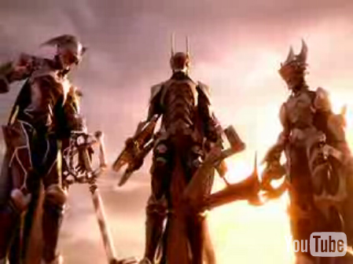
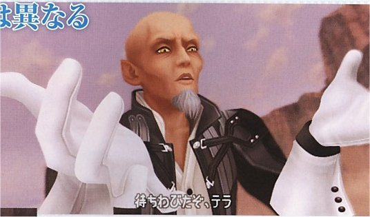

Kingdom Hearts
 De: La Frikipedia, la enciclopedia extremadamente seria.
De: La Frikipedia, la enciclopedia extremadamente seria.

|
Este artículo necesita ser ilustrado. Busca una afoto en nuestro depósito de imágenes o donde sea y ponla, pero que no sea pr0n, que se cabrea el señor del adSense y nos corta el grifo de los dólare. Y sin dólare no hay servidor...
|
De la serie Videojuegos:
Kingdom Hearts

| Desarrollado por:
|
Square-Enix o los chinos o japoneses
|
| Distribuido por:
|
SCEE Spain, Emule o Ares.
|
| Diseñado por:
|
Hirobui Alameka.
|
| Motor
|
es un corazón humano, como indica su título.
|
| Género(s)
|
masculino (-¿Qué juego es ése?-EL kingdom hearts).
|
| Fecha de lanzamiento:
|
en 3, 6, 4, ¡¡¡YA!!!. O cuando a Nomura le salga del...
|
| Modos de juego:
|
subjuntivo, indicativo, imperativo y formas no personales. Nivel para tontos, para listos y para frikis.
|
| Requisitos:
|
Tener mucho tiempo libre y que no te vean tus amigos con fondos de pantalla Disney.
|
| Disponible en:
|
DVD, mangas porno
|
| Formatos:
|
DVD y cassete entre otros
|
| Edades:
|
El 1 para todos los que aguanten un juego tan complicado como este, el COM para los que sean ludopatas y el 2 para el publico mas turbio y oscuro.
|
| Puntuaciones:
|
mi nota, puta mierda(aunque me guste pero es que no opuedo dejar el vicio ¡¡¡¡¡NOOOOOOOOO!!!!!
|
Necesitaras incontables mercancias de papel higienico para poder jugar.

Se dice que este personaje aparecio en este juego
Este juego es una maligna combinación entre Square-Enix y Disney cuando ambas compañías se juntaron y se fumaron un porro. Antes de empezar a leer, les hemos de advertir: lo siguiente no es apto para cardiacos o gente que no quiera quedar traumada. Este videojuego es la más alta combinación entre porno juegos, y menores. De aquí surgió el termino "pornografía infantil" juego infantil. Esta historia nos hará sacar nuestras cipot... lágrimas, protagonizando diversas escenas de porno amor (no veas que tranca que tiene el niño del pelo raro).
Historia
El juego va de un niño, llamado Sora (Es que su madre se equivocó de sexo y pensó que era una niña) que vive en una piña debajo del mar isla en la que vive con sus amigos (¿amigos? e___e) empieza a tener alucinaciones(lo que hace el uso de marihuana). Tras trabajar como esclavo para Kairi y su compañía, los tres niños deciden hacer una balsa para descubrir dónde está Wally mundo.
Tras su paja ejercicio diario antes de comer descubre algo muy turbio y oscuro, (no.. tranquilos no aparece un wombat. Tampoco se acercaba Michael Jackson por detrás). Después de que Riku no se por qué le diera la espadita que se compró ayer en los chinos a Sora termina luchando con su sombra, pero... GIGANTE ¡¡¡ohh, noooo!!!. Tras "vencer" o lo que fuera que hiciese este chaval, termina explotando su isla y enviándolo a otro mundo donde se hace amigo de un pato pajero parlanchín con mala leche que se llama Donald y de un ser indescriptible que tiene nariz y piernas llamado Foggy Goofy.
Él busca a los amigos de la isla mientras que unos seres negros llamados sincojones Sincorazones (se describen más abajo...o vas tú o nada, porque es que me da pereza explicarte...) salen a la luz y lo acosan sexualmente, queriendo ganarse su corazón. Donald y Goofy se llevan a Sora por los distintos mundos con su nave espacial, formada por bloques gumi (en realidad, son bloques de Lego con núcleo de plutonio). Sora, cuya afición era buscar tesoros, entre otras oscuras y malévolas aficiones, se llevó la llave maestra que le había regalado Riku por el favorcillo que le hizo (ejem...) En la versión extendida de KH aparece ese favorcillo, para en general abrir cofres y cerrar cerraduras por todos los mundos. Este trabajo bien remunerado le sirvió para comprarse unos zapatos mas grandes que los que tenía (que ya era decir).
Sora se enfrentó contra los acosadores gigantes, que le maltrataron muy dolidos por su rechazo. Tras matar a todo bicho viviente, sufre un trauma que se intenta suicidar al ver que Riku le había engañado por otro más viejo que él, con mas dinero y con más experiencias en la cama. Se "jinca" la espada y se convierte en Pikachu pero la compañia omitió este detalle transformándolo en un sincorazon. Tras matar a Ámsen en un cuarto gigante oscuro (no se debe decir el uso del cuarto) Donald queda embarazado. Este detalle también es obviado en el juego. El juego termina tras incansables horas de juego y un enganche encima que te cagas, los créditos y a la cama. Incluso Sephiroth estará ahí para darle palos y garrotes a Sora, sin olvidar que en la mas terrible oscuridad estara su archienemigo Steewie Griffin. Esto tampoco sale en el juego, pero sí en la version extendia que solo tiene Chuk Norris.
Historia del COM (Chain Of Memories)
La historia es simple, lo malo es que Marluxia lía a Sora diciendole una frase sacada del MSN: "Aquí perder es encontrar y encontrar es perder" Tras esto Sora queda patidifuso y va por el castillo viendo alucinaciones(por el uso de drogas) de lo que ya ha pasado, pero esta vez se echa unas partidas de Mus con los malos para aliviar las cosas) Al llegar al último nivel, como en el Señor de los Anillos en minas Tirith se monta la de dios. Todo termina con un fiestón, Sora se liga a la rubia, incorpórea de Kairi, ya que ésta solo lleva un minivestido y no es mucha ropa, y ésta duerme a Sora.
Historia del KH2
El Sora está durmiendo la mona que se cogió en la fiesta del Castillo del Olvido, para no esperarle a que se despierte te sale un niño llamado Roxas. Este niño tiene pesadillas con Sora y con Michael Jackson por lo de Thriller. Vive en una ciudad donde el tranvía solo hace un circuito sin parar a recoger a ningún pasajero. Solo te puedes subir arriba como los indigentes o pobretones. Roxas pertenecía a la Organización XIII, pero después de un desengaño amoroso con Axel va a despertar a Sora. Después de que Sora se despertase de la mona tiene que ir a los gitanos para comprarse ropa nueva ya que la de cuando tenia 14 años le queda muy corta ahora que tiene 16. Después las tres furcias hadas le dan otra espada de los chinos y la posibilidad de cambiarse de ropa como en los Sims.
El chaval mata con mucha expiración a los miembros de la secta (la secta aparece más abajo. ya sabes, pereza, aparte de que un Wombat me está mirando mal).
Sora visita muchos mundos pagando sus respectivas aduanas y conoce a nuevos amigos y amigas (preferentemente amigos para Donald). Tras vivir muchas aventuras, juergas, tríos etc, descubre que Roxas es su incorpóreo que ni su creador sabía que existia ese nombre. Se enfrenta a Xemnas (un cubano albino único en su especie) que cae derrotado con el poder combinado de Sora y Riku más una pequeña ayuda llamada "don anabolizantes"
Personajes buenos y mundos fuera de España
Trio infeliz
- Sora: Un
travestido niño al que le van los maduritos y la zoofília cuya madre se folló a todo el castillo de Disney(incluyendo a las escobas) y por eso no se sabe quién es su padre (se dice que es Dark Vader). Usa unos GRANDES zapatos amarillos por los que pasa drogas sin sospechas.Tiene múltiples llaves maestras que disparan ultrarrayos y pueden abrir tu habitación cuando estés desnudo, entre otras cosas. Parece tímido pero a lo tonto se folla hace amigos de todos los que viven en los mundos. Usa abundante gomina como la que usa Cloud, y su vestimenta la compra en mercadillos de su ciudad.
- Donald: Un pato parlante que sabe hacer enfadar a partidos politícos. La mejor de las magias: cuando enciende un papel, hace Piro; cuando enchufa una nevera, hace Hielo; cuando produce un cortocircuito, Electro; cuando sopla, Aero; cuando se compra un botiquín, Cura; y cuando estampa contra alguien una Sartén y lo deja "planeta", origina Gravedad; cuando quita el imán de la nevera que antes enchufó, hace Magneto; cuando le roba el espejo de su Saca del Héroe al friki de Zelda, hace Reflejo. Sus estudios de matemáticas le permiten hacer eso pero con más fuerza añadiendo el operador aritmético profesional "+" después de cada magia.Es un pedófilo que pone a Sora mirando para Cuenca todas las noches.
- Goofy: Ser indescriptible creado a través de de las cenizas de un Wombat y A.D.N de prosiquito. Ataca con un escudo por que le gusta el roce con los enemigos, sobre todo con los negros. Es amigo de sus enemigos y enemigo de sus amigos.
Islote Perejil, el destino de todos
Es el lugar más tenebroso de todos ya que allí viven las cabras y el PP
- Wakka:Es un mierdecilla pelopincho con nombre de canción (Waka Waka eh eh), es decir, una mierda pinchada en un pelo o algo así. Wakka es un personaje poco importante que lo único que hace es separar las bolas chinas y usarlas como arma excepto cuando quiere lanzar ataques fuertes, que en este caso utiliza los conejones de Kimahri. Lo único que hace aparte de luchar es jugar con Tidus a un juego que consiste en meter pelotas en la portería del rival.
- Tidus:Este es el novio de Yuna que en un principio pensaron en que fuera un dragon rojo bicéfalo que lanza rayos por los ojos y que el combustible de sus poderes es forrarse a las cabras pero no pudieron porque entonces los creadores del juego se quedarían sin cabras que desvirgar. lugar del dragón pusieron al Tidus de FFX en versión niño y en lugar de usar una espada como arma utiliza una lima de manzana rojo.
- Selphie:Esta es una cigarra que tiene multitud de juguetes leales y cuando peleas con ella siempre la pillas con el condor doble el que tiene doble, curiosamente solo por la mitad.
- Kairi: La mejor amiga de Sora. Se tinta el pelo y también es acosada por los seres oscuros. Dicen que se guarda una estrella estupefaciente en el bolsillo. Se la a vsito manteniendo charlas con Merlín y en situaciones muy mimosas, se dice que le gustan las bananas muy maduras.
- Riku: Un plagio de Sephiroth (hay fuertes rumores que es su hermano lejano, lejano ya saben Lucrezia puso de nuevo chivo a Vincent)y el amigo albino de Sora. Se alía con esas cosas oscuras para que lo maten (a Sora, no a Riku, lógicamente) y sea él protagonista de KH2, pero recibe su merecido al ser encerrado en un mega-closet oscuro con el peor efebofílico de la historia: Mickey Mouse. Se dice que este madurito con cara de pocos amigos se tiraba al raton de bill geats mientras estaban allí, según ellos en el reino oscuro(cuarto oscuro para que nos entendamos)
- Lado Oscuro:Este es un negro al que le han quitado el corazón y le hicierón un agujero con forma de corazón en una pelea de pollos contra Nacho Vidal.
- La madre de Sora: Esta es la mayor del juego entero, pues cuando avisa a Sora de que ya esta la cena, no da la cara por que se lo monta con el lado oscuro, la veremos en proximas entregas en una trama oscura como su pasado, quizas fuese tata o ama de llaves, bueno las dos cosas son las mismas, quizas....
- Un periquito Este es el típico bug del juego en el que aparece el periquito del capitan garfio tocando las pelotas de su patio.
Ciudad de pasodoble (o triple si tienes 3 piernas como yo), Bastion Hueco o Verga Vergel Radiante para los amigos
- León:Este personaje es en realidad Squall Leonhart(aunque en el FFVIII yo puse soygay! de nombre creando escenas como:-¡soygay!,soygay! Leonhart ven enseguida a mi despacho) pero se cambió el nombre porque decían que era un León en la cama.Su arma es una espada con gatillo que le ganó a un mono-araña en una pelea de pollas.Es de Bastión Hueco
- Yuffie:Es una ninja que no tiene ni ta idea de como usar ninguna técnica ninja,con esto quiero decir que es una inútil a la que yo pego de ostias en el juego.Es de Bastión Hueco.
- Cid:Es quien todos piensan: El Cid Campeador.Lo único que hace es
ocuparse de una tienda hasta que habren el bar y vender cubitos (terrones de azucar con núcleo de coca).
- Armadura:Monstruo que tiene el arma dura.Se ve que los negros y los pederastas franceses le han robado el corazón y que cuando luchas contra el si pierdes aparece una animación de la armadura violando a Sora.Tiene 2 formas en la primera es un negro gigante con una armadura y sin extremidades.En la segunda usa los pies como manos las manos como pies y se come su culo.
- Merlín:Es un viejo verde al que le van los osos y por eso guarda el libro de Winnie The Pooh en su casa y aunque también se va de fiesta a la vez que Winnie de putas.
- Hada
mandarina madrina: Madre de Donald Tía muy antigua (Ses que no tiene mas)
- Chip y Chop: Unas ardillas que fueron abandonadas en la luna. Construyeron una nave con bloques que le robaron al bebé espacial
tras violarlo y regresaron a la tierra. Se han sacado el permiso de la N.A.S.A. para pilotar naves. Es sabido que estas pequeñas ladronas no respiran...
- Mickey Mouse: UN PUTO RATÓN DE MIERDA que es amigo de Riku y de Sora y que en la primera parte no se le da importancia ya que se pierde y nadie se preocupa de él y en la segunda, como huele mal, también pasan de él. Y cuando intenta tirar un rayo con su espada medio rota, ya que se cayó en un precipicio en una de sus escenas en la que salía imitando al superman], sin querer le da al culo de algunos de sus compañeros.
- Stan Lee: El personaje mas importante del juego. Es una mezcla de okami, el lobo del pincel que se mete chutes de esperma, pero sin pincel porque stan lee siempre ha sido guionista onanista esperpentico, por lo que crea. En el juego hace Chas!, aparece a tu lado y te crea un super heroe que quedará por siempre en marvel, y se enfrentará en Civil War: Kingdom Hearts en el puto medio y creará otro mundo mas, por lo ke miki mus, daffy duck y goofy acaban siempre hasta la polla de ir de mundo en mundo infinitamente, ademas, siempre que viajan, se encuentran a pekeños demonios ke pretenden comerse el jodido sol.
- Zack Fier:Est personaje aun no sale (pero saldra pronto) es tan genial que no lo as sakdo por temor a que las masas compren demaciado kh es un soldado de 1 clase no como otros que dicen serlo y esta en contra de sephi por matar a su novia.
Personajes malomalisimos
- 'Xemnas, Ansem,Gargamel, ginsen o zurraspin: En realidad no se sabe quien es el malo de este juego. Si el primero, segundo o tercero de antes. Pero lo que si se sabe es que está lleno de mala virgen y oscuridad en general. Un día jugando al Tetris perdió y decidió vengarse, haciendose homogay, fabricando genkidamas, seres oscuros con armadura que en realidad son pederastas franceses obligados a no permanecer en sus propias casas, y jodiendo todas las peliculas melosas, asquerosamente repipis de Disney. Todos le odian y le aman a partes iguales, pero como dejó sin amigos al gay de Sora, este se quiere vengar pegandole con una llave... habrase visto tremenda chorrada, yo iría con un atomo o con un pelo de sobaco de Zeus!!!! Y creo que sale en el Kingdom hearts 2, chain of memories ("Adulteros Adolescentes que no quieren salir de un castillo), y si sale el 3, pues en el 3.Es un enormisismos alido, sus frases crelerbes son: Y me unto las tostadas con la puuunta de mi rabooo.
Monstruos
- Los sincorazón o
Negros cosas negras, malas y chungas: Estas cosas negras tienen verga corazón, lo que hacen es comer corazones de las personas. Al principio del juego se iban a llamar "los devoracorazoneshumanos" pero entró Disney y le cambió el nombre por cositas lindas con ojos brillantes que te absorben el corazón para purificarlos, pero al final Bruce Lee entro y repartio patadas a to kiski y al final se le puso sincorazón.
- Incorporeos o Cosas blancas, malas y chungas con aspecto de espermatozoides: Estas criaturas salieron del esperma de Lee. Eran tan fuertes que cogieron personalidad propia pero eran tan tontos que iban por ahi pegendo saltitos. Hasta que Bruce los elimino a todos. Despues Disney quiso meterlos en el juego con el nombre de "cositas blancas extremadamente bonitas" pero Square se lo impidio y propuso otro nombre de "Criaturas espermatozideas" hasta que no llego Bruce y dijo santas palabras que tras la purificacion divina un friki se le ocurrio el nombre de Incorporeos.
- Wombats: Estos temibles seres aparecen en el Kingdom Hearts 3 Final Mix +++++, y necesitas haberte cargado a 30988765567 de ellos para desbloquear a un jefe secreto (Hitmonlee), que de una patada te devuelve al primer Kingdom Hearts.
Secta de los XIII
Organización XIII o secta de los XIII:(entren en la pagina para ver a la organizacion XIII desde otro punto de vista o fumado) seres incorporeos malevolos que se creen sexy porque hablan con vos solemne, cuando una persona groxa pierde el corazon , queda un recipiente de leche vacio que es ocupado por estos inutiles, sus nombres parecen sacados de un borracho + una X , por ejemplo cuando Sora se suicido con la DarkKeyblade, de Riku Ansem, nació un incorporeo llamado RoXas que es como el gemelo bueno malo de Sora, lo usas de pedo 6 horas y después lo volves a ver al final del juego porque nadie puede sacarle protagonismo al psicotico de Sora. La primera vez que los vez es en el Chain of Memories y van vestidos con camisones de dormir que lo pintaron de negro para creerse mas guay, estos son todos los subnormales amorfos que lo forman:
- .1 El líder de esta pandilla de amigos: Xemnas o "Cubano" para los amigos, es el cubano albino de el juego con su pelo guapo y sus lentillas ultima generación, usa como arma dos espadas laser de Star warras que compro en los
chinos almacenes Toy sara. Su ilusión es crear un corazón gigante con plastilina que le quedaba entre las uñas. Se dedico a recoger a los muertos de hambre miembros de su secta grupo, clan o lo que fuera. Es un enormisismo salido, sus frases crelebres son: Y me unto las tostadas con la puuunta de mi rabooo.
Cuando sora le dice que si no se cuarda de cuando era humano y tenia corazon, Mister Salido va y dice: Afortunadamente........¡ TENGO PELOS EN EL CULO!
- .2 El pistolero Olson wei: Xigbar o "Xig" para los amigos, es un personaje que cuando chico le gustaba mucho las peleas con pistolas y decidio hacerse unas
pajilla pistolas de cartón piedra, cuando empezo a trabajar como "pirata" en humor amarillo se compro con el poco dinero que tenia dos pistolas mas modernas que disparaba rayitos y se flipo tanto que se meo en los calzoncillos de gusto. Formo parte de la compañia los chilicuatres hasta que se fue con xemnas.
- .3 El rastafari del grupo: Xaldin o "Porreta" para los amigos, se metia de todo hasta que se encontro con Xemnas para que se uniese a su
secta grupo. Utiliza como armas unas cuantas lanzas voladoras que en verdad no vuelan, se mantienen en el aire gracias a un hipi que desde arriba con unas cuerdas invisibles las mueve.
- .4 El margi: Vexen o "Feo ven paka" para los amigos que cree el tener,el feo de la organizacion, un nerd, un looser, no es nada cool aunque use hielo, le cogieron cuando le pegaban en el cole y se lo llevo Xemnas como conejillo de indias. Es tan cagao que utiliza un escudo
carton-piedra altamente cualificado para la lucha cuerpo a cuerpo.
- .5 El cateto: Lexaeus o "Mozo de pueblo" para los amigos, la espada grande es lo unico que tiene, ustedes saquen sus propias conclusiones,este personaje viene del pueblo del norte se supone que es vasco pero no se sabe a ciencia cierta. Esta haciendo un programa de bricolage en un canal de su pais. Usa como arma un palo muy grande y muy gordo con el que se siente identificado.
- .6 El EMO: Zexion o "el chaval del pelo raro" para los amigos, rata tramposa,el mas mala leche de la organizacion, se dice que es Emo y tiene una pagina web oficial de Emos que recibe al dia 50 visitas, es el Emo fundador, y su arma es un libro que en su interior contiene un comic y revistas guarras entre otras, que usa para
excitarse defenderse en una pelea.
- .7 El lameculos del jefe: Saïx o "Xais" para los vascos y catalanes, es un tremendo
lamedor de culos guerrero, se gana la vida sirviendo al jefe y protegiendo su culo. Un dia Xemnas le dijo que su corazon de plastilina le daria un corazon y aun hoy lo sigue buscando. Utiliza como arma un palo que a su vez se divide en varios palos mas.
- .8 El piromano-sicario: Axel o "Tu mata a ...", el preferido de todos porque parece bueno,pero es un piromano, ademas es un sicario por las noches, ¿quien creeis que provoco el incendio en el edificio de Madrid, o el incendio del castillo de Joguarts? Pues el cuando estaba borracho. Ademas lleva 5000 kilos de gomina en el pelo para que segun el quede Kiss. Su coletilla mas famosa es "lo captas" se dice que fue él, el que le dijo al Rey de España que dijera la famosa frase de "por que no te callas". Actualmente mantiene relaciones con Roxas con la que segun él es solo amistad.Sus armas son dos
panderetas tapacubos de los coches que tuneo de rojo y puso un tres mecheros en cada lado para que la gente diga: Mira echa fuego ese Chakram(nombre que le puso el a sus armas despues de ver Naruto)
- .9 El metrosexsual chico de los recados: Demyx O "Demi traeme agua" para los amigos, es el
más pringao de todo sl juego chico de los recados en su clan, tambien sirve para chuparsela al jefe servir agua fresquita a los demas. Por las noches trabaja tocando musica de Rock en bares de alterne. Su arma es una guitarra pintada a mano que si la escuchas crees ver figuras de aguas que se mueven.
- .10 El ludopata del Mus: Luxord o "Una partidita lux" para los amigos, es el ludopata del grupo y cada vez que puede se hace una
pajilla baraja española, antiguamente fue crupier del casino de Marbella pero le echaron por corrupcion. Ahora trabaja como crupier para la organizacion.Sus armas son cartas de la baraja española que las tunea y les corta los filos para que hagan daño al tirarlas.
- .11 La
putilla señorita para hacerme un favor" para los clientes,reina del sadomasoquismo, le gusta pegar y que le pegen, es electrica. Trabajaba como puta señora que hace favores a cambio de dinero en un bar hasta que pasaba por alli Xemnas y la recogio para follarsela que formara parte de su grupo. utiliza como arma la electricidad estatica, con unos cuantos pinchos de metal lo refriega por unos trozos de lana que tiene escondido y al tocar a alguien la produce, si se ve en peligro se la al enemigo saca del camison una pila de muchos valtios y la conecta a sus pinchos, asi la gente cree que tiene el poder del rayo.
- .12 La chicle afeminada rosa: Marluxia o "Maricona ven paka que te voy a poner el culo como la bandera de japon" para los conocidos, el malo de CoM, narcisista malvado de pelo rosado, es super rapido, usa el elemento de las flores, es el jardinero de la organización, tiene la guadaña de Hitmonlee, muchos creen que es gay pero no, se viola a Naminé cuando Sora esta en coma. Se le ha visto por ultima vez en el cuarto oscuro con Riku y Mickey.
- .13 El niño de la espadita: Roxas o "Tu niño te estas pareciendo mucho a uno que yo me se" para los amigos. Este individuo es el incorporeo de Sora tras una noche loca. Le recogio Xemnas para ejercer de pederasta pero no le gusto y dejo al crio en la organizacion. Sus armas son las dos llavesdesucasaespadacompradasenloschinos. Una de las llavesdesucasaespadacompradasenloschinos se la
robó cogió a la traumática Alucinación.
- 14.La alucinacion: Xion o "no se ¿quien soy?". Es basicamente una ilusion creada por la
mente enferma aspirina que se tomo Marluxia al día siguiente de la borrachera. Al final del Kingdom hearts 358/2 dias Roxas come helado con marihuana azul, lo que hace ver a Xion como una travesti disfrasa de Sora gigante que va peleando con el por 4 mundos. Es una timida, traumada, loca y aveces estupida su arma es la llavesdesucasaespadacompradasenloschinos igualita a la de Roxas.
- .15 Chuck Norris Es el malo final del Kingdom Hearts 3 (si creías que era otro estabas equivocado...) Solo aparece si le arrancas la cabeza a Kairi pulsando CUADRADO CUADRADO CÍRCULO TRIÁNGULO X PENTÁGONO Y CÍRCULO en el Mundo Inexistente. Ningún ataque afecta a este jefe, lo único que hará es atravesar la pantalla de tu televisor y arrancarte tus testículos por atreverte a enfrentarte a él.
Los demas personajes y mundos no tienen importancia o el escritor no le a salido de los huevos la inspiracion necesaria.
¿Sabías que...
- ...la organización se llamaba antes el club de los poetas muertos?
- ...larxene tiene una hija llamada Pikachu, y una mascota, Heidi (espera, era al revés)?
- ...la organización pretendía asesinar a La Reina?
- ...Bush pretendia entrar en la organización?
- ...Demyx trabajo de currito en el programa de BE?
- ...Axel estudio para socorrista?
- ...Luxord salio en la serie "Las Vegas"? (Si, en serio dadle al pause en el minuto 10 del segundo capitulo)
- ...Marluxia era antes de Gran Hermano?
- ...y su madre Carmen de Mairena?
- ...Xemnas estudio conmigo en la Universidad de muchajuerga?
- ...la Organización XIII son en verdad 20?
- ...los demás murieron a manos de Frijoles?
- ...Marluxia estudió en la uiniversidad del camasutra y su profesor era un wombat?
- ...el juego es el efecto de ver todas las peliculas de disney y desmadrarse jugando final fantasy?
- ...Xenmas tiene un mensaje subliminal oculto, y es que si le cambias las letras de su nombre sale Mansex?
- ...Nomura no sabe ni de qué va Kingdom Hearts ahora?
- ...De hecho ni sabe que ha pasao' y está mazo rallao porque no sabe cómo seguir?
- ...Xion es irrelevante en la saga, maldita cría?
- ...Axel se pasó de la raya con Roxas y por eso se largo de la Org.?
Nuevos
- Terra: Personajillo poco creible, jodidamente dificil de pasar en el KH2FM(en Jap quien tenga huevos de pasarselo), que un dia se pillo un pedo terrible qe no se acordo de su nombre cogiendo el nombre de un viejo
pederasta con ojos saltones. Es amigo de Ven(un niño que es Roxas o algun hijo ilegitimo) y de Aqua la que se tiro un dia turbio creando a los dos deformes de Sora y Riku.
- Ventus Ven para los amigos(los pocos que tienen): Este niño que sin quererlo ni parecerlo se parece un monton a Roxas, cosas de geneticas supongo, se sospecha que es hijo de Aqua y algún monstruito de los que aparecen en el juego. Salió en el video secreto del Kh2FM congelado cuando supo que el viejo Xehanort era un pederasta.
- Aqua: La
furcia chica del grupo, se la turnan aunque ella le gusta mas los maduritos como Terra. El pelo azul se le quedo tras un fallido intento por teñirse el pelo con aguaplas. ataca moviéndose cómo si se le hubieran metido varias cucarachas en su ceñido top de putilla de burdel.

- Xehanort: Aqui esta el padre de Michael Jackson, Es un tremendo
hijodeputa, violador, sicopata malomalisimo y un calvo que cree que vive en los años 80. Sus ojos se le salen de la orbita teniendo un angulo de vision mucho mayor. Tenia como discipulos a Terra, Ven y Aqua pero se enteraron que violaba a niños y le dejaron, ahora tiene un aprendiz llamado stewie griffin, sus ansias de conquistar el mundo le llevara a este pequeño aprendiz a ver el lado mas oscuro de su amo."Zas en toda la boca",(frase que decia el maestro cuando estaba en un cuarto con stewie). Su magia la aprendio usando magia borras de grado superior.

- Vanitas: Acompañante y tal vez pareja de el Master Xeanort. Su traje es ajustado como el de una zorra poligonera. Aunque el pobre idiota esta obsesionado sexualmente por Ven pues se le ha visto tratando de acosarlo en los casting. Su rostro es igualito al de Sora con pelo negro sera el padre de Sora ¿quien sabe?
Proximos juegos en los que Nomura se forrara a costa de los cuatro jilipollas mataos del KH
- Kingdom Hearts Birth by slip: como su propio nombre indica es otro juego del KH, pero este entra de lleno en la historia los 4 mataos que arriba se les
insulta "describe". El nombre de birth by slip nos describe un juego en el que se centra, el pajarito del slip en spanish, tenemos ante nosotros un juego turbio, xXx y con un sentido de humor infimo, seguro que el maestro Xeanort intentara algo para conseguir ver el poder que sale del slip. Terra y compañia tendra que impedirlo, aunque Aqua "la señora de compañia" esta segura ya que el Master apodo por el que quieren que le llamen a Xeanort no le interesa lo que tenga debajo de su bragslip. Los enemigos no son sincorazon ni incorporeos sino otra sub-raza metamorfa azul al estilo de un cervatillo. Esta emocionante aventura solo estara para PoP o Psp, aunque muchos frikazos intentaran jugar con algun emulador de psp en el pc, que dios los bendiga si lo consiguen. Se espera su salida mucho antes del fin del mundo.
- Kingdom Hearts 358/ 2 Days: otro juego de la compañia square-enix, este es para la DS lo cual significa que se podra jugar en el pc con dicho emulador. El titulo de este juego es confuso pero fuentes fidelignas, me han comunicado que son los dias al que roxas se le pasa la borrachera, y mientras se le pasa va haciendo trabajos sucios para la organizacion, todavia no se a especificado que clase de trabajos sucios se refiere. En el juego manejamos a el niño de la espadita y a la
secta organizacion XIII, pero resulta que no son trece si no catorce alguien habra dado a luz, no se sabe si larxene o marluxia y a nacido una niña que por las fotos debe de ser una autentica hijadeputa luchadora. Tiene un estraño parecido a Aqua pero sera reflejos octicos creado por los rayos de larxante, digo larxene. Su salida se espera para finales de 2008 en Japon, a nuestro humilde "pais" llegara cuando nos demos cuenta del error que fue enviar a rodolfo chikilicuatre a eurovision.
- Kingdom Hearts coded: El nombre del juego nos viene a referirse a un kh lleno de codigos al estilo matrix, sera para nuestros moviles, pero no para todos los moviles canis, sino para moviles de verdad, de los buenos, de los que no se ven muchos en nuestro "pais", no podremos disfrutar del juego al menos que zurraspin lo disponga con su debido emulador. El juego es de hace mucho tiempo, lo cual quiere decir que veremos al sora con la cara de gilipollas y la ropa de payaso del 1. Nos movemos por los mundo moviendo bloques al estilo de un fabuloso juego de los 80´s en los que tendremos que moverlos para matar a los sincorazones o demas jilipolleces que ponga nomura en el juego. Su salida es todo un misterio como el de porque mandamos a rodolfo a eurovision.
- Kingdom Hearts Tres De: Drim drop Distans: El vendeconsolas de la N3DS, sí, esa consola que tiene tu colega y que tú no te la compras porque sabes que es putamierda. En éste juego a Nomura se le va la pinza y te mete un par de mundos nuevos, aunque te hace repetir los otros pensando que no te vas a dar cuenta. Pero se acaba aquí? No señor, porque a Sora le pintan la ropa de Rojo y ala, ya es nueva. También se pone a dar saltos por tos laos' y a subirse a las farolas en plan stripper, bueno, y también podemos dirigir al Riku ese. Ahora no hay sincorazón ni incorporeos ni pollas, sino unos bichos rosas supermonos que se comen los sueños, porque la seriedad ante todo. El malo es Xehanort (Ya, pero cuál?), en concreto Xehanort I de Su Casa, que ha venido en un Delorean con Doc M. Brown para liársela pardisima a Sora y llevárselo de las vacaciones a MarianDor. Que sí, que al final te venden que no hay tres, sino mil millones de Xehanort, incluido el viejo, que ha vuelto porque se han cargao a los otros dos. Pero... ¿Y los otros también? Sí, porque Xehanort I De Su Casa (primogénito de Rodolfo Chikilicuatre) se los ha traído en su Delorean a todos. Ah, y los incorporeos sí tienen corazón, y Axel tiene una llave espada y Rajoy mató a Flipper (¡¡¡NO!!! D:) y pasan cosas mazo chungas. Vamos, que todo el sentido que le podías encontrar a un popurri de Mickey Mouse con Sefirot se pierde en esta última entrega.
Como derrotar al Sephiroth ese
Sephiroth es la version de Cloud despues de esnifar coca y pillar la del copón.
Requisitos para el de KH1:
- Tomar muuuuuuchos anabolizantes, pero muchos.
- Muchos combos + 1 (tanto aereos como terrestres)y si puedes un +2 o +3 (se obtiene a vase de pinchazos de droga magica)
- Tener o Recuberdos tejanos o Calabazin Macarra o Artensa.
- Tener bastante magia para curarte
- Muchos Elixires o Ultrapociones, crack, pastis, flayer, cocaina, miel un poquito de mermelada y mucho amor
- Nivel alto de cocina, electricidad, locomocion y agente de marketing
- Algo de practica en el mando de la play, saber cual es el cuadrado, circulo equis y triangulo ademas de los r1 y 2 como l1 y 2 nos llevara algun tiempo pero si lo sabemos no pasa nah
- 3 kg de tomates
- 500 g de patatas
- Y lo mas importante, saber esquivar su verga espada de 230 cm dandole a la x o vendiendo tripis
Para derrotar al de KH2:
- Todo lo anterior
- Ir sin hambre, sin sed, sin ganas de mear y sin ganas de hacer po-po.
- Ir muuuuuuy motivado.
- cantar marc anthony para relajarte
Para el de KH4751290:
- Ahi ya estará muerto de las palizas que le dará Cloud en los 4751289 Kingdo Hearts anteriores.
Feliz intento en vano.
|
|
 Shooter Shooter
 Terror Terror
 Velocidad Velocidad
 Rol Rol
 Estrategia Estrategia
 Aventuras Aventuras
 Fight! Fight!
 Clásicos Clásicos
 Deportivos Deportivos
 Aventura gráfica Aventura gráfica
 Novela visual Novela visual
 Personajes de videojuegos Personajes de videojuegos
|
Autor(es):
- Krusher
- Nexo
- Jowsh
- Sergi
- Pexy
- Jak11
- Alex2610
- Chazzyklon
- Un capullo solitario
- Kaori
Frikipedia 2005-2016, Licencia
GFDL 1.2 - Extraído por FrikiLeaks